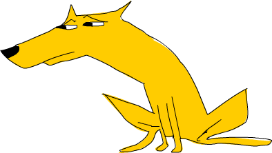
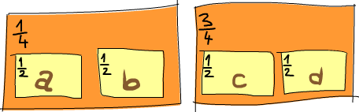
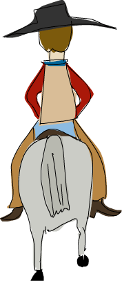

For a Few Monads More¶

We've seen how monads can be used to take values with contexts and apply
them to functions and how using >>= or do notation allows us to focus
on the values themselves while the context gets handled for us.
We've met the Maybe monad and seen how it adds a context of possible
failure to values. We've learned about the list monad and saw how it
lets us easily introduce non-determinism into our programs. We've also
learned how to work in the IO monad, even before we knew what a monad
was!
In this chapter, we're going to learn about a few other monads. We'll see how they can make our programs clearer by letting us treat all sorts of values as monadic ones. Exploring a few monads more will also solidify our intuition for monads.
The monads that we'll be exploring are all part of the mtl package. A
Haskell package is a collection of modules. The mtl package comes with
the Haskell Platform, so you probably already have it. To check if you
do, type ghc-pkg list in the command-line. This will show which Haskell
packages you have installed and one of them should be mtl, followed by a
version number.
Jupyter Note: We'll turn off the automatic linting for IHaskell first.
:opt no-lint
Writer? I hardly know her!¶
We've loaded our gun with the Maybe monad, the list monad and the IO
monad. Now let's put the Writer monad in the chamber and see what
happens when we fire it!
Whereas Maybe is for values with an added context of failure and the
list is for non-deterministic values, the Writer monad is for values
that have another value attached that acts as a sort of log value.
Writer allows us to do computations while making sure that all the log
values are combined into one log value that then gets attached to the
result.
For instance, we might want to equip our values with strings that explain what's going on, probably for debugging purposes. Consider a function that takes a number of bandits in a gang and tells us if that's a big gang or not. That's a very simple function:
isBigGang :: Int -> Bool
isBigGang x = x > 9
isBigGang :: Int -> (Bool, String)
isBigGang x = (x > 9, "Compared gang size to 9.")
So now instead of just returning a Bool, we return a tuple where the
first component of the tuple is the actual value and the second
component is the string that accompanies that value. There's some added
context to our value now. Let's give this a go:
isBigGang 3
isBigGang 30

So far so good. isBigGang takes a normal value and returns a value with
a context. As we've just seen, feeding it a normal value is not a
problem. Now what if we already have a value that has a log string
attached to it, such as (3, "Smallish gang."), and we want to feed it to
isBigGang? It seems like once again, we're faced with this question: if
we have a function that takes a normal value and returns a value with a
context, how do we take a value with a context and feed it to the
function?
When we were exploring the Maybe monad, we made a function applyMaybe,
which took a Maybe a value and a function of type a -> Maybe b and fed
that Maybe a value into the function, even though the function takes a
normal a instead of a Maybe a. It did this by minding the context that
comes with Maybe a values, which is that they are values with possible
failure. But inside the a -> Maybe b function, we were able to treat
that value as just a normal value, because applyMaybe (which later
became >>=) took care of checking if it was a Nothing or a Just value.
In the same vein, let's make a function that takes a value with an
attached log, that is, an (a,String) value and a function of type
a -> (b,String) and feeds that value into the function. We'll call it
applyLog. But because an (a,String) value doesn't carry with it a
context of possible failure, but rather a context of an additional log
value, applyLog is going to make sure that the log of the original value
isn't lost, but is joined together with the log of the value that
results from the function. Here's the implementation of applyLog:
applyLog :: (a,String) -> (a -> (b,String)) -> (b,String)
applyLog (x,log) f = let (y,newLog) = f x in (y,log ++ newLog)
When we have a value with a context and we want to feed it to a
function, we usually try to separate the actual value from the context
and then try to apply the function to the value and then see that the
context is taken care of. In the Maybe monad, we checked if the value
was a Just x and if it was, we took that x and applied the function to
it. In this case, it's very easy to find the actual value, because we're
dealing with a pair where one component is the value and the other a
log. So first we just take the value, which is x and we apply the
function f to it. We get a pair of (y,newLog), where y is the new result
and newLog the new log. But if we returned that as the result, the old
log value wouldn't be included in the result, so we return a pair of
(y,log ++ newLog). We use ++ to append the new log to the old one.
Here's applyLog in action:
(3, "Smallish gang.") `applyLog` isBigGang
(30, "A freaking platoon.") `applyLog` isBigGang
The results are similar to before, only now the number of people in the
gang had its accompanying log and it got included in the result log.
Here are a few more examples of using applyLog:
("Tobin","Got outlaw name.") `applyLog` (\x -> (length x, "Applied length."))
("Bathcat","Got outlaw name.") `applyLog` (\x -> (length x, "Applied length"))
See how inside the lambda, x is just a normal string and not a tuple and
how applyLog takes care of appending the logs.
Monoids to the rescue¶
Be sure you know what monoids are at this point! Cheers.
Right now, applyLog takes values of type (a,String), but is there a
reason that the log has to be a String? It uses ++ to append the logs,
so wouldn't this work on any kind of list, not just a list of
characters? Sure it would. We can go ahead and change its type to this:
applyLog :: (a,[c]) -> (a -> (b,[c])) -> (b,[c])
applyLog (x,log) f = let (y,newLog) = f x in (y,log ++ newLog)
Now, the log is a list. The type of values contained in the list has to
be the same for the original list as well as for the list that the
function returns, otherwise we wouldn't be able to use ++ to stick them
together.
Would this work for bytestrings? There's no reason it shouldn't.
However, the type we have now only works for lists. It seems like we'd
have to make a separate applyLog for bytestrings. But wait! Both lists
and bytestrings are monoids. As such, they are both instances of the
Monoid type class, which means that they implement the mappend function.
And for both lists and bytestrings, mappend is for appending. Watch:
[1,2,3] `mappend` [4,5,6]
import qualified Data.ByteString as B
B.pack [99,104,105] `mappend` B.pack [104,117,97,104,117,97]
applyLog :: (Monoid m) => (a,m) -> (a -> (b,m)) -> (b,m)
applyLog (x,log) f = let (y,newLog) = f x in (y,log `mappend` newLog)
Because the accompanying value can now be any monoid value, we no longer
have to think of the tuple as a value and a log, but now we can think of
it as a value with an accompanying monoid value. For instance, we can
have a tuple that has an item name and an item price as the monoid
value. We just use the Sum newtype to make sure that the prices get
added as we operate with the items. Here's a function that adds drink to
some cowboy food:
import Data.Monoid
type Food = String
type Price = Sum Int
addDrink :: Food -> (Food,Price)
addDrink "beans" = ("milk", Sum 25)
addDrink "jerky" = ("whiskey", Sum 99)
addDrink _ = ("beer", Sum 30)
Sum 3 `mappend` Sum 9
The addDrink function is pretty simple. If we're eating beans, it
returns "milk" along with Sum 25, so 25 cents wrapped in Sum. If we're
eating jerky we drink whiskey and if we're eating anything else we drink
beer. Just normally applying this function to a food wouldn't be
terribly interesting right now, but using applyLog to feed a food that
comes with a price itself into this function is interesting:
("beans", Sum 10) `applyLog` addDrink
("jerky", Sum 25) `applyLog` addDrink
("dogmeat", Sum 5) `applyLog` addDrink
Milk costs 25 cents, but if we eat it with beans that cost 10 cents,
we'll end up paying 35 cents. Now it's clear how the attached value
doesn't always have to be a log, it can be any monoid value and how two
such values are combined into one depends on the monoid. When we were
doing logs, they got appended, but now, the numbers are being added up.
Because the value that addDrink returns is a tuple of type (Food,Price),
we can feed that result to addDrink again, so that it tells us what we
should drink along with our drink and how much that will cost us. Let's
give it a shot:
("dogmeat", Sum 5) `applyLog` addDrink `applyLog` addDrink
Adding a drink to some dog meat results in a beer and an additional 30
cents, so ("beer", Sum 35). And if we use applyLog to feed that to
addDrink, we get another beer and the result is ("beer", Sum 65).
The Writer type¶
Now that we've seen that a value with an attached monoid acts like a
monadic value, let's examine the Monad instance for types of such
values. The Control.Monad.Writer module exports the Writer w a type
along with its Monad instance and some useful functions for dealing with
values of this type.
First, let's examine the type itself. To attach a monoid to a value, we
just need to put them together in a tuple. The Writer w a type is just a
newtype wrapper for this. Its definition is very simple:
import Control.Monad.Writer

First off, let's examine >>=. Its implementation is essentially the
same as applyLog, only now that our tuple is wrapped in the
Writer newtype, we have to unwrap it when pattern matching. We take the value x
and apply the function f to it. This gives us a Writer w a value and we
use a let expression to pattern match on it. We present y as the new
result and use mappend to combine the old monoid value with the new one.
We pack that up with the result value in a tuple and then wrap that with
the Writer constructor so that our result is a Writer value instead of
just an unwrapped tuple.
So, what about return? It has to take a value and put it in a default
minimal context that still presents that value as the result. So what
would such a context be for Writer values? If we want the accompanying
monoid value to affect other monoid values as little as possible, it
makes sense to use mempty. mempty is used to present identity monoid
values, such as "" and Sum 0 and empty bytestrings. Whenever we use
mappend between mempty and some other monoid value, the result is that
other monoid value. So if we use return to make a Writer value and then
use >>= to feed that value to a function, the resulting monoid value
will be only what the function returns. Let's use return on the number 3
a bunch of times, only we'll pair it with a different monoid every time:
runWriter (return 3 :: Writer String Int)
runWriter (return 3 :: Writer (Sum Int) Int)
runWriter (return 3 :: Writer (Product Int) Int)
Because Writer doesn't have a Show instance, we had to use runWriter to
convert our Writer values to normal tuples that can be shown. For
String, the monoid value is the empty string. With Sum, it's 0, because
if we add 0 to something, that something stays the same. For Product,
the identity is 1.
The Writer instance doesn't feature an implementation for fail, so if a
pattern match fails in do notation, error is called.
Using do notation with Writer¶
Now that we have a Monad instance, we're free to use do notation for
Writer values. It's handy for when we have a several Writer values and
we want to do stuff with them. Like with other monads, we can treat them
as normal values and the context gets taken for us. In this case, all
the monoid values that come attached get mappended and so are reflected
in the final result. Here's a simple example of using do notation with
Writer to multiply two numbers:
import Control.Monad.Writer
logNumber :: Int -> Writer [String] Int
logNumber x = writer (x, ["Got number: " ++ show x])
multWithLog :: Writer [String] Int
multWithLog = do
a <- logNumber 3
b <- logNumber 5
return (a*b)
logNumber takes a number and makes a Writer value out of it. For the
monoid, we use a list of strings and we equip the number with a
singleton list that just says that we have that number. multWithLog is a
Writer value which multiplies 3 and 5 and makes sure that their attached
logs get included in the final log. We use return to present a*b as the
result. Because return just takes something and puts it in a minimal
context, we can be sure that it won't add anything to the log. Here's
what we see if we run this:
runWriter multWithLog
Sometimes we just want some monoid value to be included at some
particular point. For this, the tell function is useful. It's part of
the MonadWriter type class and in the case of Writer it takes a monoid
value, like ["This is going on"] and creates a Writer value that
presents the dummy value () as its result but has our desired monoid
value attached. When we have a monadic value that has () as its result,
we don't bind it to a variable. Here's multWithLog but with some extra
reporting included:
multWithLog :: Writer [String] Int
multWithLog = do
a <- logNumber 3
b <- logNumber 5
tell ["Gonna multiply these two"]
return (a*b)
It's important that return (a*b) is the last line, because the result
of the last line in a do expression is the result of the whole do
expression. Had we put tell as the last line, () would have been the
result of this do expression. We'd lose the result of the
multiplication. However, the log would be the same. Here is this in
action:
runWriter multWithLog
Adding logging to programs¶
Euclid's algorithm is an algorithm that takes two numbers and computes
their greatest common divisor. That is, the biggest number that still
divides both of them. Haskell already features the gcd function, which
does exactly this, but let's implement our own and then equip it with
logging capabilities. Here's the normal algorithm:
gcd' :: Int -> Int -> Int
gcd' a b
| b == 0 = a
| otherwise = gcd' b (a `mod` b)
The algorithm is very simple. First, it checks if the second number is
- If it is, then the result is the first number. If it isn't, then the result is the greatest common divisor of the second number and the remainder of dividing the first number with the second one. For instance, if we want to know what the greatest common divisor of 8 and 3 is, we just follow the algorithm outlined. Because 3 isn't 0, we have to find the greatest common divisor of 3 and 2 (if we divide 8 by 3, the remainder is 2). Next, we find the greatest common divisor of 3 and 2. 2 still isn't 0, so now we have have 2 and 1. The second number isn't 0, so we run the algorithm again for 1 and 0, as dividing 2 by 1 gives us a remainder of 0. And finally, because the second number is now 0, the final result is 1. Let's see if our code agrees:
gcd' 8 3
It does. Very good! Now, we want to equip our result with a context, and
the context will be a monoid value that acts as a log. Like before,
we'll use a list of strings as our monoid. So the type of our new gcd'
function should be:
All that's left now is to equip our function with log values. Here's the code:
import Control.Monad.Writer
gcd' :: Int -> Int -> Writer [String] Int
gcd' a b
| b == 0 = do
tell ["Finished with " ++ show a]
return a
| otherwise = do
tell [show a ++ " mod " ++ show b ++ " = " ++ show (a `mod` b)]
gcd' b (a `mod` b)
This function takes two normal Int values and returns a Writer [String] Int,
that is, an Int that has a log context. In the case where b is 0,
instead of just giving a as the result, we use a do expression to put
together a Writer value as a result. First we use tell to report that
we're finished and then we use return to present a as the result of the
do expression. Instead of this do expression, we could have also written
this:
However, I think the do expression is easier to read. Next, we have the
case when b isn't 0. In this case, we log that we're using mod to figure
out the remainder of dividing a and b. Then, the second line of the do
expression just recursively calls gcd'. Remember, gcd' now ultimately
returns a Writer value, so it's perfectly valid that
gcd' b (a `mod` b) is a line in a do expression.
While it may be kind of useful to trace the execution of this new gcd'
by hand to see how the logs get appended, I think it's more insightful
to just look at the big picture and view these as values with a context
and from that gain insight as to what the final result will be.
Let's try our new gcd' out. Its result is a Writer [String] Int value
and if we unwrap that from its newtype, we get a tuple. The first part
of the tuple is the result. Let's see if it's okay:
fst $ runWriter (gcd' 8 3)
Good! Now what about the log? Because the log is a list of strings,
let's use mapM_ putStrLn to print those strings to the screen:
mapM_ putStrLn $ snd $ runWriter (gcd' 8 3)
I think it's awesome how we were able to change our ordinary algorithm
to one that reports what it does as it goes along just by changing
normal values to monadic values and letting the implementation of >>=
for Writer take care of the logs for us. We can add a logging mechanism
to pretty much any function. We just replace normal values with Writer
values where we want and change normal function application to >>= (or
do expressions if it increases readability).
Inefficient list construction¶
When using the Writer monad, you have to be careful which monoid to use,
because using lists can sometimes turn out to be very slow. That's
because lists use ++ for mappend and using ++ to add something to the
end of a list is slow if that list is really long.
In our gcd' function, the logging is fast because the list appending
ends up looking like this:
Lists are a data structure that's constructed from left to right, and
this is efficient because we first fully construct the left part of a
list and only then add a longer list on the right. But if we're not
careful, using the Writer monad can produce list appending that looks
like this:
This associates to the left instead of to the right. This is inefficient because every time it wants to add the right part to the left part, it has to construct the left part all the way from the beginning!
The following function works like gcd', only it logs stuff in reverse.
First it produces the log for the rest of the procedure and then adds
the current step to the end of the log.
import Control.Monad.Writer
gcdReverse :: Int -> Int -> Writer [String] Int
gcdReverse a b
| b == 0 = do
tell ["Finished with " ++ show a]
return a
| otherwise = do
result <- gcdReverse b (a `mod` b)
tell [show a ++ " mod " ++ show b ++ " = " ++ show (a `mod` b)]
return result
It does the recursion first, and binds its result value to result. Then
it adds the current step to the log, but the current step goes at the
end of the log that was produced by the recursion. Finally, it presents
the result of the recursion as the final result. Here it is in action:
mapM_ putStrLn $ snd $ runWriter (gcdReverse 8 3)
It's inefficient because it ends up associating the use of ++ to the
left instead of to the right.
Difference lists¶

Because lists can sometimes be inefficient when repeatedly appended in
this manner, it's best to use a data structure that always supports
efficient appending. One such data structure is the difference list. A
difference list is similar to a list, only instead of being a normal
list, it's a function that takes a list and prepends another list to it.
The difference list equivalent of a list like [1,2,3] would be the
function \xs -> [1,2,3] ++ xs. A normal empty list is [], whereas an
empty difference list is the function \xs -> [] ++ xs.
The cool thing about difference lists is that they support efficient
appending. When we append two normal lists with ++, it has to walk all
the way to the end of the list on the left of ++ and then stick the
other one there. But what if we take the difference list approach and
represent our lists as functions? Well then, appending two difference
lists can be done like so:
Remember, f and g are functions that take lists and prepend something to
them. So, for instance, if f is the function ("dog"++) (just another way
of writing \xs -> "dog" ++ xs) and g the function ("meat"++), then
f `append` g makes a new function that's equivalent to the following:
We've appended two difference lists just by making a new function that first applies one difference list some list and then the other.
Let's make a newtype wrapper for difference lists so that we can easily
give them monoid instances:
newtype DiffList a = DiffList { getDiffList :: [a] -> [a] }
The type that we wrap is [a] -> [a] because a difference list is just a
function that takes a list and returns another. Converting normal lists
to difference lists and vice versa is easy:
toDiffList :: [a] -> DiffList a
toDiffList xs = DiffList (xs++)
fromDiffList :: DiffList a -> [a]
fromDiffList (DiffList f) = f []
To make a normal list into a difference list we just do what we did before and make it a function that prepends it to another list. Because a difference list is a function that prepends something to another list, if we just want that something, we apply the function to an empty list!
Here's the Monoid instance:
instance Semigroup (DiffList a) where
(DiffList f) <> (DiffList g) = DiffList (\xs -> f (g xs))
instance Monoid (DiffList a) where
mempty = DiffList (\xs -> [] ++ xs)
mappend = (<>)
fromDiffList (toDiffList [1,2,3,4] `mappend` toDiffList [1,2,3])
Tip top! Now we can increase the efficiency of our gcdReverse function
by making it use difference lists instead of normal lists:
import Control.Monad.Writer
gcdReverse :: Int -> Int -> Writer (DiffList String) Int
gcdReverse a b
| b == 0 = do
tell (toDiffList ["Finished with " ++ show a])
return a
| otherwise = do
result <- gcdReverse b (a `mod` b)
tell (toDiffList [show a ++ " mod " ++ show b ++ " = " ++ show (a `mod` b)])
return result
We only had to change the type of the monoid from [String] to
DiffList String and then when using tell, convert our normal lists into
difference lists with toDiffList. Let's see if the log gets assembled
properly:
mapM_ putStrLn . fromDiffList . snd . runWriter $ gcdReverse 110 34
We do gcdReverse 110 34, then use runWriter to unwrap it from the
newtype, then apply snd to that to just get the log, then apply
fromDiffList to convert it to a normal list and then finally print its
entries to the screen.
Comparing Performance¶
To get a feel for just how much difference lists may improve your
performance, consider this function that just counts down from some
number to zero, but produces its log in reverse, like gcdReverse, so
that the numbers in the log will actually be counted up:
finalCountDown :: Int -> Writer (DiffList String) ()
finalCountDown 0 = do
tell (toDiffList ["0"])
finalCountDown x = do
finalCountDown (x-1)
tell (toDiffList [show x])
If we give it 0, it just logs it. For any other number, it first counts
down its predecessor to 0 and then appends that number to the log. So if
we apply finalCountDown to 100, the string "100" will come last in the
log.
Anyway, if you load this function in GHCi and apply it to a number,
like 5, you'll see that it quickly starts counting from 0 onwards:
mapM_ putStrLn . fromDiffList . snd . runWriter $ finalCountDown 5
However, if we change it to use normal lists instead of difference lists, like so:
finalCountDown :: Int -> Writer [String] ()
finalCountDown 0 = do
tell ["0"]
finalCountDown x = do
finalCountDown (x-1)
tell [show x]
And then tell GHCi to start counting:
mapM_ putStrLn . snd . runWriter $ finalCountDown 5
We'll see that the counting is really slow.
Of course, this is not the proper and scientific way to test how fast our programs are, but we were able to see that in this case, using difference lists starts producing results right away whereas normal lists take forever.
Oh, by the way, the song Final Countdown by Europe is now stuck in your head. Enjoy!
Reader? Ugh, not this joke again.¶

In the chapter about
applicatives, we saw that
the function type, (->) r is an instance of Functor. Mapping a function
f over a function g will make a function that takes the same thing as g,
applies g to it and then applies f to that result. So basically, we're
making a new function that's like g, only before returning its result, f
gets applied to that result as well. For instance:
let f = (*5)
let g = (+3)
(fmap f g) 8
We've also seen that functions are applicative functors. They allow us to operate on the eventual results of functions as if we already had their results. Here's an example:
let f = (+) <$> (*2) <*> (+10)
f 3
The expression (+) <$> (*2) <*> (+10) makes a function that takes
a number, gives that number to (*2) and (+10) and then adds together
the results. For instance, if we apply this function to 3, it applies
both (*2) and (+10) to 3, giving 6 and 13. Then, it calls (+) with 6
and 13 and the result is 19.
Not only is the function type (->) r a functor and an applicative
functor, but it's also a monad. Just like other monadic values that
we've met so far, a function can also be considered a value with a
context. The context for functions is that that value is not present yet
and that we have to apply that function to something in order to get its
result value.
Because we're already acquainted with how functions work as functors and
applicative functors, let's dive right in and see what their Monad
instance looks like. It's located in Control.Monad.Instances and it goes
a little something like this:
We've already seen how pure is implemented for functions, and return is
pretty much the same thing as pure. It takes a value and puts it in a
minimal context that always has that value as its result. And the only
way to make a function that always has a certain value as its result is
to make it completely ignore its parameter.
The implementation for >>= seems a bit cryptic, but it's really not
all that. When we use >>= to feed a monadic value to a function, the
result is always a monadic value. So in this case, when we feed a
function to another function, the result is a function as well. That's
why the result starts off as a lambda. All of the implementations of
>>= so far always somehow isolated the result from the monadic value
and then applied the function f to that result. The same thing happens
here. To get the result from a function, we have to apply it to
something, which is why we do (h w) here to get the result from the
function and then we apply f to that. f returns a monadic value, which
is a function in our case, so we apply it to w as well.
If don't get how >>= works at this point, don't worry, because with
examples we'll see how this is a really simple monad. Here's a do
expression that utilizes this monad:
import Control.Monad.Instances
addStuff :: Int -> Int
addStuff = do
a <- (*2)
b <- (+10)
return (a+b)
This is the same thing as the applicative expression that we wrote
earlier, only now it relies on functions being monads. A do expression
always results in a monadic value and this one is no different. The
result of this monadic value is a function. What happens here is that it
takes a number and then (*2) gets applied to that number and the result
becomes a. (+10) is applied to the same number that (*2) got applied to
and the result becomes b. return, like in other monads, doesn't have any
other effect but to make a monadic value that presents some result. This
presents a+b as the result of this function. If we test it out, we get
the same result as before:
addStuff 3
Both (*2) and (+10) get applied to the number 3 in this case.
return (a+b) does as well, but it ignores it and always presents a+b as the
result. For this reason, the function monad is also called the reader
monad. All the functions read from a common source. To illustrate this
even better, we can rewrite addStuff like so:
addStuff :: Int -> Int
addStuff x = let
a = (*2) x
b = (+10) x
in a+b
We see that the reader monad allows us to treat functions as values with
a context. We can act as if we already know what the functions will
return. It does this by gluing functions together into one function and
then giving that function's parameter to all of the functions that it
was glued from. So if we have a lot of functions that are all just
missing one parameter and they'd eventually be applied to the same
thing, we can use the reader monad to sort of extract their future
results and the >>= implementation will make sure that it all works
out.
Tasteful stateful computations¶
Haskell is a pure language and because of that, our programs are made of functions that can't change any global state or variables, they can only do some computations and return them results. This restriction actually makes it easier to think about our programs, as it frees us from worrying what every variable's value is at some point in time. However, some problems are inherently stateful in that they rely on some state that changes over time. While such problems aren't a problem for Haskell, they can be a bit tedious to model sometimes. That's why Haskell features a thing called the state monad, which makes dealing with stateful problems a breeze while still keeping everything nice and pure.
When we were dealing with random numbers,
we dealt with functions that took a random generator as a parameter and
returned a random number and a new random generator. If we wanted to
generate several random numbers, we always had to use the random
generator that a previous function returned along with its result. When
making a function that takes a StdGen and tosses a coin three times
based on that generator, we had to do this:
It took a generator gen and then random gen returned a Bool value along
with a new generator. To throw the second coin, we used the new
generator, and so on. In most other languages, we wouldn't have to
return a new generator along with a random number. We could just modify
the existing one! But since Haskell is pure, we can't do that, so we had
to take some state, make a result from it and a new state and then use
that new state to generate new results.
You'd think that to avoid manually dealing with stateful computations in this way, we'd have to give up the purity of Haskell. Well, we don't have to, since there exist a special little monad called the state monad which handles all this state business for us and without giving up any of the purity that makes Haskell programming so cool.
So, to help us understand this concept of stateful computations better, let's go ahead and give them a type. We'll say that a stateful computation is a function that takes some state and returns a value along with some new state. That function would have the following type:
s is the type of the state and a the result of the stateful
computations.
Assignment in most other languages could be thought of as a stateful computation. For instance, when we do
x = 5in an imperative language, it will usually assign the value5to the variablexand it will also have the value5as an expression. If you look at that functionally, you could look at it as a function that takes a state (that is, all the variables that have been assigned previously) and returns a result (in this case5) and a new state, which would be all the previous variable mappings plus the newly assigned variable.
This stateful computation, a function that takes a state and returns a result and a new state, can be thought of as a value with a context as well. The actual value is the result, whereas the context is that we have to provide some initial state to actually get that result and that apart from getting a result we also get a new state.
Stacks and stones¶
Say we want to model operating a stack. You have a stack of things one on top of another and you can either push stuff on top of that stack or you can take stuff off the top of the stack. When you're putting an item on top of the stack we say that you're pushing it to the stack and when you're taking stuff off the top we say that you're popping it. If you want to something that's at the bottom of the stack, you have to pop everything that's above it.
We'll use a list to represent our stack and the head of the list will be
the top of the stack. To help us with our task, we'll make two
functions: pop and push. pop will take a stack, pop one item and return
that item as the result and also return a new stack, without that item.
push will take an item and a stack and then push that item onto the
stack. It will return () as its result, along with a new stack. Here
goes:
type Stack = [Int]
pop :: Stack -> (Int,Stack)
pop (x:xs) = (x,xs)
push :: Int -> Stack -> ((),Stack)
push a xs = ((),a:xs)
We used () as the result when pushing to the stack because pushing an
item onto the stack doesn't have any important result value, its main
job is to change the stack. Notice how we just apply the first parameter
of push, we get a stateful computation. pop is already a stateful
computation because of its type.
Let's write a small piece of code to simulate a stack using these functions. We'll take a stack, push 3 to it and then pop two items, just for kicks. Here it is:
stackManip :: Stack -> (Int, Stack)
stackManip stack = let
((),newStack1) = push 3 stack
(a ,newStack2) = pop newStack1
in pop newStack2
We take a stack and then we do push 3 stack, which results in a tuple.
The first part of the tuple is a () and the second is a new stack and we
call it newStack1. Then, we pop a number from newStack1, which results
in a number a (which is the 3) that we pushed and a new stack which we
call newStack2. Then, we pop a number off newStack2 and we get a number
that's b and a newStack3. We return a tuple with that number and that
stack. Let's try it out:
stackManip [5,8,2,1]
Cool, the result is 5 and the new stack is [8,2,1]. Notice how
stackManip is itself a stateful computation. We've taken a bunch of
stateful computations and we've sort of glued them together. Hmm, sounds
familiar.
The above code for stackManip is kind of tedious since we're manually
giving the state to every stateful computation and storing it and then
giving it to the next one. Wouldn't it be cooler if, instead of giving
the stack manually to each function, we could write something like this:
stackManip = do
push 3
a <- pop
pop
Well, using the state monad will allow us to do exactly this. With it, we will be able to take stateful computations like these and use them without having to manage the state manually.
The State monad¶
The Control.Monad.State module provides a newtype that wraps stateful
computations. Here's its definition:
A State s a is a stateful computation that manipulates a state of type s
and has a result of type a.
Now that we've seen what stateful computations are about and how they
can even be thought of as values with contexts, let's check out their
Monad instance:
Let's take a gander at return first. Our aim with return is to take a
value and make a stateful computation that always has that value as its
result. That's why we just make a lambda \s -> (x,s). We always
present x as the result of the stateful computation and the state is
kept unchanged, because return has to put a value in a minimal context.
So return will make a stateful computation that presents a certain value
as the result and keeps the state unchanged.
What about >>=? Well, the result of feeding a stateful computation to
a function with >>= has to be a stateful computation, right? So we
start off with the State newtype wrapper and then we type out a lambda.
This lambda will be our new stateful computation. But what goes on in
it? Well, we somehow have to extract the result value from the first
stateful computation. Because we're in a stateful computation right now,
we can give the stateful computation h our current state s, which
results in a pair of result and a new state: (a, newState). Every time
so far when we were implementing >>=, once we had the extracted the
result from the monadic value, we applied the function f to it to get
the new monadic value. In Writer, after doing that and getting the new
monadic value, we still had to make sure that the context was taken care
of by mappending the old monoid value with the new one. Here, we do f a
and we get a new stateful computation g. Now that we have a new stateful
computation and a new state (goes by the name of newState) we just apply
that stateful computation g to the newState. The result is a tuple of
final result and final state!
So with >>=, we kind of glue two stateful computations together, only
the second one is hidden inside a function that takes the previous one's
result. Because pop and push are already stateful computations, it's
easy to wrap them into a State wrapper. Watch:
import Control.Monad.State
pop :: State Stack Int
pop = state $ \(x:xs) -> (x,xs)
push :: Int -> State Stack ()
push a = state $ \xs -> ((),a:xs)
pop is already a stateful computation and push takes an Int and returns
a stateful computation. Now we can rewrite our previous example of
pushing 3 onto the stack and then popping two numbers off like this:
import Control.Monad.State
stackManip :: State Stack Int
stackManip = do
push 3
a <- pop
pop
See how we've glued a push and two pops into one stateful computation?
When we unwrap it from its newtype wrapper we get a function to which we
can provide some initial state:
runState stackManip [5,8,2,1]
We didn't have to bind the second pop to a because we didn't use that a
at all. So we could have written it like this:
stackManip :: State Stack Int
stackManip = do
push 3
pop
pop
Pretty cool. But what if we want to do this: pop one number off the
stack and then if that number is 5 we just put it back onto the stack
and stop but if it isn't 5, we push 3 and 8 back on? Well, here's the
code:
stackStuff :: State Stack ()
stackStuff = do
a <- pop
if a == 5
then push 5
else do
push 3
push 8
This is quite straightforward. Let's run it with an initial stack.
runState stackStuff [9,0,2,1,0]
Remember, do expressions result in monadic values and with the State
monad, a single do expression is also a stateful function. Because
stackManip and stackStuff are ordinary stateful computations, we can
glue them together to produce further stateful computations.
moreStack :: State Stack ()
moreStack = do
a <- stackManip
if a == 100
then stackStuff
else return ()
If the result of stackManip on the current stack is 100, we run
stackStuff, otherwise we do nothing. return () just keeps the state as
it is and does nothing.
The Control.Monad.State module provides a type class that's called
MonadState and it features two pretty useful functions, namely get and
put. For State, the get function is implemented like this:
get = state $ \s -> (s,s)
So it just takes the current state and presents it as the result. The
put function takes some state and makes a stateful function that
replaces the current state with it:
put newState = state $ \s -> ((),newState)
So with these, we can see what the current stack is or we can replace it with a whole other stack. Like so:
stackyStack :: State Stack ()
stackyStack = do
stackNow <- get
if stackNow == [1,2,3]
then put [8,3,1]
else put [9,2,1]
It's worth examining what the type of >>= would be if it only worked
for State values:
See how the type of the state s stays the same but the type of the
result can change from a to b? This means that we can glue together
several stateful computations whose results are of different types but
the type of the state has to stay the same. Now why is that? Well, for
instance, for Maybe, >>= has this type:
It makes sense that the monad itself, Maybe, doesn't change. It wouldn't
make sense to use >>= between two different monads. Well, for the
state monad, the monad is actually State s, so if that s was different,
we'd be using >>= between two different monads.
Randomness and the state monad¶
At the beginning of this section, we saw how generating numbers can sometimes be awkward because every random function takes a generator and returns a random number along with a new generator, which must then be used instead of the old one if we want to generate another random number. The state monad makes dealing with this a lot easier.
The random function from System.Random has the following type:
Meaning it takes a random generator and produces a random number along
with a new generator. We can see that it's a stateful computation, so we
can wrap it in the State newtype constructor and then use it as a
monadic value so that passing of the state gets handled for us:
import System.Random
import Control.Monad.State
randomSt :: (RandomGen g, Random a) => State g a
randomSt = state random
import System.Random
import Control.Monad.State
threeCoins :: State StdGen (Bool,Bool,Bool)
threeCoins = do
a <- randomSt
b <- randomSt
c <- randomSt
return (a,b,c)
threeCoins is now a stateful computations and after taking an initial
random generator, it passes it to the first randomSt, which produces a
number and a new generator, which gets passed to the next one and so on.
We use return (a,b,c) to present (a,b,c) as the result without changing
the most recent generator. Let's give this a go:
runState threeCoins (mkStdGen 33)
Nice. Doing these sort of things that require some state to be kept in between steps just became much less of a hassle!
Error error on the wall¶
We know by now that Maybe is used to add a context of possible failure
to values. A value can be a Just something or a Nothing. However useful
it may be, when we have a Nothing, all we know is that there was some
sort of failure, but there's no way to cram some more info in there
telling us what kind of failure it was or why it failed.
The Either e a type on the other hand, allows us to incorporate a
context of possible failure to our values while also being able to
attach values to the failure, so that they can describe what went wrong
or provide some other useful info regarding the failure. An Either e a
value can either be a Right value, signifying the right answer and a
success, or it can be a Left value, signifying failure. For instance:
:t Right 4
:t Left "out of cheese error"
This is pretty much just an enhanced Maybe, so it makes sense for it to
be a monad, because it can also be viewed as a value with an added
context of possible failure, only now there's a value attached when
there's an error as well.
Its Monad instance is similar to that of Maybe and it can be found in
Control.Monad.Error:
return, as always, takes a value and puts it in a default minimal
context. It wraps our value in the Right constructor because we're using
Right to represent a successful computation where a result is present.
This is a lot like return for Maybe.
The >>= examines two possible cases: a Left and a Right. In the case
of a Right, the function f is applied to the value inside it, similar to
how in the case of a Just, the function is just applied to its contents.
In the case of an error, the Left value is kept, along with its
contents, which describe the failure.
The Monad instance for Either e makes an additional requirement, and
that is that the type of the value contained in a Left, the one that's
indexed by the e type parameter, has to be an instance of the Error type
class. The Error type class is for types whose values can act like error
messages. It defines the strMsg function, which takes an error in the
form of a string and returns such a value. A good example of an Error
instance is, well, the String type! In the case of String, the strMsg
function just returns the string that it got:
import Control.Monad.Error
:t strMsg
strMsg "boom!" :: String
Left "boom" >>= \x -> return (x+1)
Right 100 >>= \x -> Left "no way!"
When we use >>= to feed a Left value to a function, the function is
ignored and an identical Left value is returned. When we feed a Right
value to a function, the function gets applied to what's on the inside,
but in this case that function produced a Left value anyway!
When we try to feed a Right value to a function that also succeeds,
we're tripped up by a peculiar type error! Hmmm.
Right 3 >>= \x -> return (x + 100)
Haskell says that it doesn't know which type to choose for the e part of
our Either e a typed value, even though we're just printing the Right
part. This is due to the Error e constraint on the Monad instance. So if
you get type errors like this one when using Either as a monad, just add
an explicit type signature:
Right 3 >>= \x -> return (x + 100) :: Either String Int
Alright, now it works!
Other than this little hangup, using this monad is very similar to using
Maybe as a monad. In the previous chapter, we used the monadic aspects
of Maybe to simulate birds landing on the balancing pole of a tightrope
walker. As an exercise, you can rewrite that with the error monad so
that when the tightrope walker slips and falls, we remember how many
birds were on each side of the pole when he fell.
Some useful monadic functions¶
In this section, we're going to explore a few functions that either
operate on monadic values or return monadic values as their results (or
both!). Such functions are usually referred to as monadic functions.
While some of them will be brand new, others will be monadic
counterparts of functions that we already know, like filter and foldl.
Let's see what they are then!
liftM and friends¶

When we started our journey to the top of Monad Mountain, we first looked at functors, which are for things that can be mapped over. Then, we learned about improved functors called applicative functors, which allowed us to apply normal functions between several applicative values as well as to take a normal value and put it in some default context. Finally, we introduced monads as improved applicative functors, which added the ability for these values with context to somehow be fed into normal functions.
So every monad is an applicative functor and every applicative functor
is a functor. The Applicative type class has a class constraint such
that our type has to be an instance of Functor before we can make it an
instance of Applicative. But even though Monad should have the same
constraint for Applicative, as every monad is an applicative functor, it
doesn't, because the Monad type class was introduced to Haskell way
before Applicative.
But even though every monad is a functor, we don't have to rely on it
having a Functor instance because of the liftM function. liftM takes a
function and a monadic value and maps it over the monadic value. So it's
pretty much the same thing as fmap! This is liftM's type:
And this is the type of fmap:
If the Functor and Monad instances for a type obey the functor and monad
laws, these two amount to the same thing (and all the monads that we've
met so far obey both). This is kind of like pure and return do the same
thing, only one has an Applicative class constraint whereas the other
has a Monad one. Let's try liftM out:
liftM (*3) (Just 8)
fmap (*3) (Just 8)
runWriter $ liftM not $ writer (True, "chickpeas")
runWriter $ fmap not $ writer (True, "chickpeas")
runState (liftM (+100) pop) [1,2,3,4]
runState (fmap (+100) pop) [1,2,3,4]
We already know quite well how fmap works with Maybe values. And liftM
does the same thing. For Writer values, the function is mapped over the
first component of the tuple, which is the result. Doing fmap or liftM
over a stateful computation results in another stateful computation,
only its eventual result is modified by the supplied function. Had we
not mapped (+100) over pop in this case before running it, it would have
returned (1,[2,3,4]).
This is how liftM is implemented:
liftM :: (Monad m) => (a -> b) -> m a -> m b
liftM f m = m >>= (\x -> return (f x))
Or with do notation:
liftM :: (Monad m) => (a -> b) -> m a -> m b
liftM f m = do
x <- m
return (f x)
We feed the monadic value m into the function and then we apply the
function f to its result before putting it back into a default context.
Because of the monad laws, this is guaranteed not to change the context,
only the result that the monadic value presents. We see that liftM is
implemented without referencing the Functor type class at all. This
means that we can implement fmap (or liftM, whatever you want to call
it) just by using the goodies that monads offer us. Because of this, we
can conclude that monads are stronger than just regular old functors.
The Applicative type class allows us to apply functions between values
with contexts as if they were normal values. Like this:
(+) <$> Just 3 <*> Just 5
(+) <$> Just 3 <*> Nothing
Using this applicative style makes things pretty easy. <$> is just
fmap and <*> is a function from the Applicative type class that has
the following type:
So it's kind of like fmap, only the function itself is in a context. We
have to somehow extract it from the context and map it over the f a
value and then assemble the context back together. Because all functions
are curried in Haskell by default, we can use the combination of <$>
and <*> to apply functions that take several parameters between
applicative values.
Anyway, it turns out that just like fmap, <*> can also be implemented
by using only what the Monad type class give us. The ap function is
basically <*>, only it has a Monad constraint instead of an
Applicative one. Here's its definition:
mf is a monadic value whose result is a function. Because the function
is in a context as well as the value, we get the function from the
context and call it f, then get the value and call that x and then
finally apply the function to the value and present that as a result.
Here's a quick demonstration:
Just (+3) <*> Just 4
Just (+3) `ap` Just 4
[(+1),(+2),(+3)] <*> [10,11]
[(+1),(+2),(+3)] `ap` [10,11]
Now we see that monads are stronger than applicatives as well, because
we can use the functions from Monad to implement the ones for
Applicative. In fact, many times when a type is found to be a monad,
people first write up a Monad instance and then make an Applicative
instance by just saying that pure is return and <*> is ap. Similarly,
if you already have a Monad instance for something, you can give it a
Functor instance just saying that fmap is liftM.
The liftA2 function is a convenience function for applying a function
between two applicative values. It's defined simply like so:
The liftM2 function does the same thing, only it has a Monad constraint.
There also exist liftM3 and liftM4 and liftM5.
We saw how monads are stronger than applicatives and functors and how
even though all monads are functors and applicative functors, they don't
necessarily have Functor and Applicative instances, so we examined the
monadic equivalents of the functions that functors and applicative
functors use.
The join function¶
Here's some food for thought: if the result of one monadic value is
another monadic value i.e. if one monadic value is nested inside the
other, can you flatten them to just a single normal monadic value? Like,
if we have Just (Just 9), can we make that into Just 9? It turns out
that any nested monadic value can be flattened and that this is actually
a property unique to monads. For this, the join function exists. Its
type is this:
So it takes a monadic value within a monadic value and gives us just a
monadic value, so it sort of flattens it. Here it is with some Maybe
values:
join (Just (Just 9))
join (Just Nothing)
join Nothing
The first line has a successful computation as a result of a successful
computation, so they're both just joined into one big successful
computation. The second line features a Nothing as a result of a Just
value. Whenever we were dealing with Maybe values before and we wanted
to combine several of them into one, be it with <*> or >>=, they
all had to be Just values for the result to be a Just value. If there
was any failure along the way, the result was a failure and the same
thing happens here. In the third line, we try to flatten what is from
the onset a failure, so the result is a failure as well.
Flattening lists is pretty intuitive:
join [[1,2,3],[4,5,6]]
runWriter $ join (writer (writer (1,"aaa"),"bbb"))
The outer monoid value "bbb" comes first and then to it "aaa" is
appended. Intuitively speaking, when you want to examine what the result
of a Writer value is, you have to write its monoid value to the log
first and only then can you examine what it has inside.
Flattening Either values is very similar to flattening Maybe values:
join (Right (Right 9)) :: Either String Int
join (Right (Left "error")) :: Either String Int
join (Left "error") :: Either String Int
If we apply join to a stateful computation whose result is a stateful
computation, the result is a stateful computation that first runs the
outer stateful computation and then the resulting one. Watch:
runState (join (state $ \s -> (push 10,1:2:s))) [0,0,0]
The lambda here takes a state and puts 2 and 1 onto the stack and
presents push 10 as its result. So when this whole thing is flattened
with join and then run, it first puts 2 and 1 onto the stack and then
push 10 gets carried out, pushing a 10 on to the top.
The implementation for join is as follows:
Because the result of mm is a monadic value, we get that result and then
just put it on a line of its own because it's a monadic value. The trick
here is that when we do m <- mm, the context of the monad in which we
are in gets taken care of. That's why, for instance, Maybe values result
in Just values only if the outer and inner values are both Just values.
Here's what this would look like if the mm value was set in advance to
Just (Just 8):
joinedMaybes :: Maybe Int
joinedMaybes = do
m <- Just (Just 8)
m

Perhaps the most interesting thing about join is that for every monad,
feeding a monadic value to a function with >>= is the same thing as
just mapping that function over the value and then using join to flatten
the resulting nested monadic value! In other words, m >>= f is always
the same thing as join (fmap f m)! It makes sense when you think about
it. With >>=, we're always thinking about how to feed a monadic value
to a function that takes a normal value but returns a monadic value. If
we just map that function over the monadic value, we have a monadic
value inside a monadic value. For instance, say we have Just 9 and the
function \x -> Just (x+1). If we map this function over Just 9, we're
left with Just (Just 10).
The fact that m >>= f always equals join (fmap f m) is very useful if
we're making our own Monad instance for some type because it's often
easier to figure out how we would flatten a nested monadic value than
figuring out how to implement >>=.
filterM¶
The filter function is pretty much the bread of Haskell programming (map
being the butter). It takes a predicate and a list to filter out and
then returns a new list where only the elements that satisfy the
predicate are kept. Its type is this:
The predicate takes an element of the list and returns a Bool value.
Now, what if the Bool value that it returned was actually a monadic
value? Whoa! That is, what if it came with a context? Could that work?
For instance, what if every True or a False value that the predicate
produced also had an accompanying monoid value, like
["Accepted the number 5"] or ["3 is too small"]? That sounds like it could work. If
that were the case, we'd expect the resulting list to also come with a
log of all the log values that were produced along the way. So if the
Bool that the predicate returned came with a context, we'd expect the
final resulting list to have some context attached as well, otherwise
the context that each Bool came with would be lost.
The filterM function from Control.Monad does just what we want! Its type
is this:
The predicate returns a monadic value whose result is a Bool, but
because it's a monadic value, its context can be anything from a
possible failure to non-determinism and more! To ensure that the context
is reflected in the final result, the result is also a monadic value.
Let's take a list and only keep those values that are smaller than 4. To
start, we'll just use the regular filter function:
filter (\x -> x < 4) [9,1,5,2,10,3]
keepSmall :: Int -> Writer [String] Bool
keepSmall x
| x < 4 = do
tell ["Keeping " ++ show x]
return True
| otherwise = do
tell [show x ++ " is too large, throwing it away"]
return False
Instead of just returning a Bool, this function returns a
Writer [String] Bool. It's a monadic predicate. Sounds fancy, doesn't it? If
the number is smaller than 4 we report that we're keeping it and then
return True.
Now, let's give it to filterM along with a list. Because the predicate
returns a Writer value, the resulting list will also be a Writer value.
fst $ runWriter $ filterM keepSmall [9,1,5,2,10,3]
Examining the result of the resulting Writer value, we see that
everything is in order. Now, let's print the log and see what we got:
mapM_ putStrLn $ snd $ runWriter $ filterM keepSmall [9,1,5,2,10,3]
Awesome. So just by providing a monadic predicate to filterM, we were
able to filter a list while taking advantage of the monadic context that
we used.
A very cool Haskell trick is using filterM to get the powerset of a list
(if we think of them as sets for now). The powerset of some set is a set
of all subsets of that set. So if we have a set like [1,2,3], its
powerset would include the following sets:
In other words, getting a powerset is like getting all the combinations
of keeping and throwing out elements from a set. [2,3] is like the
original set, only we excluded the number 1.
To make a function that returns a powerset of some list, we're going to
rely on non-determinism. We take the list [1,2,3] and then look at the
first element, which is 1 and we ask ourselves: should we keep it or
drop it? Well, we'd like to do both actually. So we are going to filter
a list and we'll use a predicate that non-deterministically both keeps
and drops every element from the list. Here's our powerset function:
powerset :: [a] -> [[a]]
powerset xs = filterM (\x -> [True, False]) xs
Wait, that's it? Yup. We choose to drop and keep every element, regardless of what that element is. We have a non-deterministic predicate, so the resulting list will also be a non-deterministic value and will thus be a list of lists. Let's give this a go:
powerset [1,2,3]
This takes a bit of thinking to wrap your head around, but if you just consider lists as non-deterministic values that don't know what to be so they just decide to be everything at once, it's a bit easier.
foldM¶
The monadic counterpart to foldl is foldM. If you remember your folds
from the folds section, you know that foldl takes a binary
function, a starting accumulator and a list to fold up and then folds it
from the left into a single value by using the binary function. foldM
does the same thing, except it takes a binary function that produces a
monadic value and folds the list up with that. Unsurprisingly, the
resulting value is also monadic. The type of foldl is this:
Whereas foldM has the following type:
The value that the binary function returns is monadic and so the result of the whole fold is monadic as well. Let's sum a list of numbers with a fold:
foldl (\acc x -> acc + x) 0 [2,8,3,1]
The starting accumulator is 0 and then 2 gets added to the accumulator,
resulting in a new accumulator that has a value of 2. 8 gets added to
this accumulator resulting in an accumulator of 10 and so on and when we
reach the end, the final accumulator is the result.
Now what if we wanted to sum a list of numbers but with the added
condition that if any number is greater than 9 in the list, the whole
thing fails? It would make sense to use a binary function that checks if
the current number is greater than 9 and if it is, fails, and if it
isn't, continues on its merry way. Because of this added possibility of
failure, let's make our binary function return a Maybe accumulator
instead of a normal one. Here's the binary function:
binSmalls :: Int -> Int -> Maybe Int
binSmalls acc x
| x > 9 = Nothing
| otherwise = Just (acc + x)
foldM binSmalls 0 [2,8,3,1]
foldM binSmalls 0 [2,11,3,1]
Excellent! Because one number in the list was greater than 9, the whole
thing resulted in a Nothing. Folding with a binary function that returns
a Writer value is cool as well because then you log whatever you want as
your fold goes along its way.
Making a safe RPN calculator¶

When we were solving the problem of implementing a RPN
calculator, we noted that it worked
fine as long as the input that it got made sense. But if something went
wrong, it caused our whole program to crash. Now that we know how to
take some code that we have and make it monadic, let's take our RPN
calculator and add error handling to it by taking advantage of the Maybe
monad.
We implemented our RPN calculator by taking a string like "1 3 + 2 *",
breaking it up into words to get something like ["1","3","+","2","*"]
and then folding over that list by starting out with an empty stack and
then using a binary folding function that adds numbers to the stack or
manipulates numbers on the top of the stack to add them together and
divide them and such.
This was the main body of our function:
We made the expression into a list of strings, folded over it with our folding function and then when we were left with just one item in the stack, we returned that item as the answer. This was the folding function:
The accumulator of the fold was a stack, which we represented with a
list of Double values. As the folding function went over the RPN
expression, if the current item was an operator, it took two items off
the top of the stack, applied the operator between them and then put the
result back on the stack. If the current item was a string that
represented a number, it converted that string into an actual number and
returned a new stack that was like the old one, except with that number
pushed to the top.
Let's first make our folding function capable of graceful failure. Its type is going to change from what it is now to this:
So it will either return Just a new stack or it will fail with Nothing.
The reads function is like read, only it returns a list with a single
element in case of a successful read. If it fails to read something,
then it returns an empty list. Apart from returning the value that it
read, it also returns the part of the string that it didn't consume.
We're going to say that it always has to consume the full input to work
and make it into a readMaybe function for convenience. Here it is:
readMaybe :: (Read a) => String -> Maybe a
readMaybe st = case reads st of [(x,"")] -> Just x
_ -> Nothing
Testing it out:
readMaybe "1" :: Maybe Int
readMaybe "GO TO HELL" :: Maybe Int
Okay, it seems to work. So, let's make our folding function into a monadic function that can fail:
foldingFunction :: [Double] -> String -> Maybe [Double]
foldingFunction (x:y:ys) "*" = return ((x * y):ys)
foldingFunction (x:y:ys) "+" = return ((x + y):ys)
foldingFunction (x:y:ys) "-" = return ((y - x):ys)
foldingFunction xs numberString = liftM (:xs) (readMaybe numberString)
The first three cases are like the old ones, except the new stack gets
wrapped in a Just (we used return here to do this, but we could have
written Just just as well). In the last case, we do
readMaybe numberString and then we map (:xs) over it. So if the stack xs is
[1.0,2.0] and readMaybe numberString results in a Just 3.0, the result
is Just [3.0,1.0,2.0]. If readMaybe numberString results in a Nothing
then the result is Nothing. Let's try out the folding function by
itself:
foldingFunction [3,2] "*"
foldingFunction [3,2] "-"
foldingFunction [] "*"
foldingFunction [] "1"
foldingFunction [] "1 wawawawa"
It looks like it's working! And now it's time for the new and improved
solveRPN. Here it is ladies and gents!
import Data.List
solveRPN :: String -> Maybe Double
solveRPN st = do
[result] <- foldM foldingFunction [] (words st)
return result
Just like before, we take the string and make it into a list of words.
Then, we do a fold, starting with the empty stack, only instead of doing
a normal foldl, we do a foldM. The result of that foldM should be a
Maybe value that contains a list (that's our final stack) and that list
should have only one value. We use a do expression to get that value and
we call it result. In case the foldM returns a Nothing, the whole thing
will be a Nothing, because that's how Maybe works. Also notice that we
pattern match in the do expression, so if the list has more than one
value or none at all, the pattern match fails and a Nothing is produced.
In the last line we just do return result to present the result of the
RPN calculation as the result of the final Maybe value.
Let's give it a shot:
solveRPN "1 2 * 4 +"
solveRPN "1 2 * 4 + 5 *"
solveRPN "1 2 * 4"
solveRPN "1 8 wharglbllargh"
The first failure happens because the final stack isn't a list with one
element in it and so the pattern matching in the do expression fails.
The second failure happens because readMaybe returns a Nothing.
Composing monadic functions¶
When we were learning about the monad laws, we said that the <=<
function is just like composition, only instead of working for normal
functions like a -> b, it works for monadic functions like a -> m b.
For instance:
let f = (+1) . (*100)
f 4
let g = (\x -> return (x+1)) <=< (\x -> return (x*100))
Just 4 >>= g
In this example we first composed two normal functions, applied the
resulting function to 4 and then we composed two monadic functions and
fed Just 4 to the resulting function with >>=.
If we have a bunch of functions in a list, we can compose them one all
into one big function by just using id as the starting accumulator and
the . function as the binary function. Here's an example:
let f = foldr (.) id [(+1),(*100),(+1)]
f 1
The function f takes a number and then adds 1 to it, multiplies the
result by 100 and then adds 1 to that. Anyway, we can compose monadic
functions in the same way, only instead of normal composition we use <=<
and instead of id we use return. We don't have to use a foldM over a
foldr or anything because the <=< function makes sure that composition
happens in a monadic fashion.
When we were getting to know the list monad in the previous
chapter, we used it to figure out
if a knight can go from one position on a chessboard to another in
exactly three moves. We had a function called moveKnight which took the
knight's position on the board and returned all the possible moves that
he can make next. Then, to generate all the possible positions that he
can have after taking three moves, we made the following function:
And to check if he can go from start to end in three moves, we did the
following:
Using monadic function composition, we can make a function like in3,
only instead of generating all the positions that the knight can have
after making three moves, we can do it for an arbitrary number of moves.
If you look at in3, we see that we used moveKnight three times and each
time we used >>= to feed it all the possible previous positions. So
now, let's make it more general. Here's how to do it:
First we use replicate to make a list that contains x copies of the
function moveKnight. Then, we monadically compose all those functions
into one, which gives us a function that takes a starting position and
non-deterministically moves the knight x times. Then, we just make the
starting position into a singleton list with return and feed it to the
function.
Now, we can change our canReachIn3 function to be more general as well:
Making monads¶

In this section, we're going to look at an example of how a type gets
made, identified as a monad and then given the appropriate Monad
instance. We don't usually set out to make a monad with the sole purpose
of making a monad. Instead, we usually make a type whose purpose is
to model an aspect of some problem and then later on if we see that the
type represents a value with a context and can act like a monad, we give
it a Monad instance.
As we've seen, lists are used to represent non-deterministic values. A
list like [3,5,9] can be viewed as a single non-deterministic value that
just can't decide what it's going to be. When we feed a list into a
function with >>=, it just makes all the possible choices of taking an
element from the list and applying the function to it and then presents
those results in a list as well.
If we look at the list [3,5,9] as the numbers 3, 5 and 9 occurring at
once, we might notice that there's no info regarding the probability
that each of those numbers occurs. What if we wanted to model a
non-deterministic value like [3,5,9], but we wanted to express that 3
has a 50% chance of happening and 5 and 9 both have a 25% chance of
happening? Let's try and make this happen!
Let's say that every item in the list comes with another value, a probability of it happening. It might make sense to present this like this then:
In mathematics, probabilities aren't usually expressed in percentages,
but rather in real numbers between a 0 and 1. A 0 means that there's no
chance in hell for something to happen and a 1 means that it's happening
for sure. Floating point numbers can get real messy real fast because
they tend to lose precision, so Haskell offers us a data type for
rational numbers that doesn't lose precision. That type is called
Rational and it lives in Data.Ratio. To make a Rational, we write it as
if it were a fraction. The numerator and the denominator are separated
by a %. Here are a few examples:
import Data.Ratio
1%4
1%2 + 1%2
1%3 + 5%4
The first line is just one quarter. In the second line we add two halves
to get a whole and in the third line we add one third with five quarters
and get nineteen twelfths. So let'use throw out our floating points and
use Rational for our probabilities:
[(3,1%2),(5,1%4),(9,1%4)]
Okay, so 3 has a one out of two chance of happening while 5 and 9 will
happen one time out of four. Pretty neat.
We took lists and we added some extra context to them, so this
represents values with contexts too. Before we go any further, let's
wrap this into a newtype because something tells me we'll be making some
instances.
import Data.Ratio
newtype Prob a = Prob { getProb :: [(a,Rational)] } deriving Show
Alright. Is this a functor? Well, the list is a functor, so this should probably be a functor as well, because we just added some stuff to the list. When we map a function over a list, we apply it to each element. Here, we'll apply it to each element as well, only we'll leave the probabilities as they are. Let's make an instance:
instance Functor Prob where
fmap f (Prob xs) = Prob $ map (\(x,p) -> (f x,p)) xs
We unwrap it from the newtype with pattern matching, apply the function
f to the values while keeping the probabilities as they are and then
wrap it back up. Let's see if it works:
fmap negate (Prob [(3,1%2),(5,1%4),(9,1%4)])
Another thing to note is that the probabilities should always add up to
1. If those are all the things that can happen, it doesn't make sense
for the sum of their probabilities to be anything other than 1. A coin
that lands tails 75% of the time and heads 50% of the time seems like it
could only work in some other strange universe.
Now the big question, is this a monad? Given how the list is a monad,
this looks like it should be a monad as well. First, let's think about
return. How does it work for lists? It takes a value and puts it in a
singleton list. What about here? Well, since it's supposed to be a
default minimal context, it should also make a singleton list. What
about the probability? Well, return x is supposed to make a monadic
value that always presents x as its result, so it doesn't make sense for
the probability to be 0. If it always has to present it as its result,
the probability should be 1!
What about >>=? Seems kind of tricky, so let's make use of the fact
that m >>= f always equals join (fmap f m) for monads and think about
how we would flatten a probability list of probability lists. As an
example, let's consider this list where there's a 25% chance that
exactly one of 'a' or 'b' will happen. Both 'a' and 'b' are equally
likely to occur. Also, there's a 75% chance that exactly one of 'c' or
'd' will happen. 'c' and 'd' are also equally likely to happen. Here's a
picture of a probability list that models this scenario:

What are the chances for each of these letters to occur? If we were to
draw this as just four boxes, each with a probability, what would those
probabilities be? To find out, all we have to do is multiply each
probability with all of probabilities that it contains. 'a' would occur
one time out of eight, as would 'b', because if we multiply one half by
one quarter we get one eighth. 'c' would happen three times out of eight
because three quarters multiplied by one half is three eighths. 'd'
would also happen three times out of eight. If we sum all the
probabilities, they still add up to one.
Here's this situation expressed as a probability list:
thisSituation :: Prob (Prob Char)
thisSituation = Prob
[( Prob [('a',1%2),('b',1%2)] , 1%4 )
,( Prob [('c',1%2),('d',1%2)] , 3%4)
]
Notice that its type is Prob (Prob Char). So now that we've figured out
how to flatten a nested probability list, all we have to do is write the
code for this and then we can write >>= simply as join (fmap f m) and
we have ourselves a monad! So here's flatten, which we'll use because
the name join is already taken:
flatten :: Prob (Prob a) -> Prob a
flatten (Prob xs) = Prob $ concat $ map multAll xs
where multAll (Prob innerxs,p) = map (\(x,r) -> (x,p*r)) innerxs
The function multAll takes a tuple of probability list and a probability
p that comes with it and then multiplies every inner probability with p,
returning a list of pairs of items and probabilities. We map multAll
over each pair in our nested probability list and then we just flatten
the resulting nested list.
Now we have all that we need, we can write a Monad instance!
instance Applicative Prob
instance Monad Prob where
return x = Prob [(x,1%1)]
m >>= f = flatten (fmap f m)
fail _ = Prob []

Because we already did all the hard work, the instance is very simple.
We also defined the fail function, which is the same as it is for lists,
so if there's a pattern match failure in a do expression, a failure
occurs within the context of a probability list.
It's also important to check if the monad laws hold for the monad that
we just made. The first one says that return x >>= f should be equal
to f x. A rigorous proof would be rather tedious, but we can see that if
we put a value in a default context with return and then fmap a function
over that and flatten the resulting probability list, every probability
that results from the function would be multiplied by the 1%1
probability that we made with return, so it wouldn't affect the context.
The reasoning for m >>= return being equal to just m is similar. The
third law states that f <=< (g <=< h) should be the same as
(f <=< g) <=< h. This one holds as well, because it holds for the list monad
which forms the basis of the probability monad and because
multiplication is associative. 1%2 * (1%3 * 1%5) is equal to
(1%2 * 1%3) * 1%5.
Now that we have a monad, what can we do with it? Well, it can help us do calculations with probabilities. We can treat probabilistic events as values with contexts and the probability monad will make sure that those probabilities get reflected in the probabilities of the final result.
Say we have two normal coins and one loaded coin that gets tails an astounding nine times out of ten and heads only one time out of ten. If we throw all the coins at once, what are the odds of all of them landing tails? First, let's make probability values for a normal coin flip and for a loaded one:
data Coin = Heads | Tails deriving (Show, Eq)
coin :: Prob Coin
coin = Prob [(Heads,1%2),(Tails,1%2)]
loadedCoin :: Prob Coin
loadedCoin = Prob [(Heads,1%10),(Tails,9%10)]
And finally, the coin throwing action:
import Data.List (all)
flipThree :: Prob Bool
flipThree = do
a <- coin
b <- coin
c <- loadedCoin
return (all (==Tails) [a,b,c])
Giving it a go, we see that the odds of all three landing tails are not that good, despite cheating with our loaded coin:
getProb flipThree
All three of them will land tails nine times out of forty, which is less
than 25%. We see that our monad doesn't know how to join all of the
False outcomes where all coins don't land tails into one outcome. That's
not a big problem, since writing a function to put all the same outcomes
into one outcome is pretty easy and is left as an exercise to the reader
(you!)
In this section, we went from having a question (what if lists also carried information about probability?) to making a type, recognizing a monad and finally making an instance and doing something with it. I think that's quite fetching! By now, we should have a pretty good grasp on monads and what they're about.